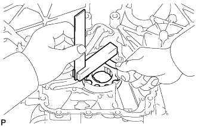

OIL PUMP > INSPECTION |
| 1. INSPECT OIL PUMP RELIEF VALVE |
Coat the relief valve with engine oil.
Check that the relief valve falls smoothly into the valve hole by its own weight.
If the relief valve is not as specified, replace it. If necessary, replace the timing chain cover sub-assembly.
| 2. INSPECT OIL PUMP ROTOR SET |
Install the rotors to the timing chain cover with the marks on the rotors facing outward. Check that the rotors revolve smoothly.
| *1 | Mark |
Check the tip clearance.
Using a feeler gauge, measure the clearance between the drive and driven rotor tips as shown in the illustration.
|  |
Check the side clearance.
Using a feeler gauge and steel square, measure the clearance between the rotors and steel square as shown in the illustration.
Check the body clearance.
Using a feeler gauge, measure the clearance between the timing chain cover and driven rotor as shown in the illustration.